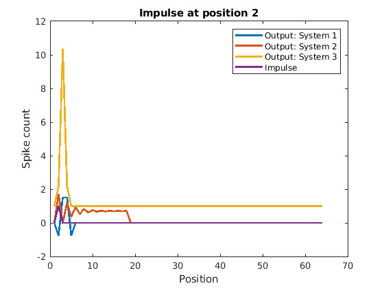
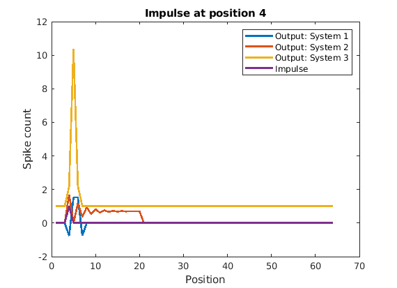

Contents
clear; clc; close all;
a)
impulse_pos = [1, 2, 4, 8, 64]; % The position of the impulses impulse = cell(length(impulse_pos), 1); % initializing inputs for impulses output = cell(length(impulse_pos), 3); % initializing outputs for impulses N = 64; % length of the input column vector
Creating impulse vectors with impulses at position determined by the impulse_pos(i) and then computing the output response by passing the input impulse through each system. Plotting the output through each system and overlaying it over the impulse vector. Repeating it for each impulse and creating a new figure for each of them
for i = 1:length(impulse_pos) impulse{i} = zeros(N, 1); impulse{i}(impulse_pos(i)) = 1; figure(); for j = 1:3 fname = str2func(sprintf('unknownSystem%d', j)); output{i, j} = fname(impulse{i}); plot(output{i, j}, 'DisplayName', ['Output: System ', num2str(j)], ... 'LineWidth', 2) hold on; end plot(impulse{i}, 'DisplayName', 'Impulse', 'LineWidth', 2); legend() title(['Impulse at position ', num2str(impulse_pos(i))]) xlabel('Position') ylabel('Spike count') end 

To check for linearlity we have to determine if the system exhibits superposition and scaling. First, random weights are chosen for any two inputs (here, impulses at postion 2 and 4 are taken). The combined impulse is then combuted by scaling each impulse by its weight and then summing the scales impulses. If the system were to exhibit linearity, then the output of the system for input impulses scaled and added should be the same as the sum of the outputs for each impulse scaled by the same amount.
To check for shift-invariance, we have to determine if the output of the system shifts by the same amount as the shift in the input. First, a random shift is chosen for any one input (here, impulse at position 2 is taken). The shifted impulse is then computed by using the circshift function on the input and shifting it by the randomly chosen shift factor. If the system were to exhibit shift-invariance, then the output of the system for input impulse shifted should be the same as the output of the impulse shifted by the same amount.
sc2 = randi(10); % Weight for impulse at position 2 sc3 = randi(100); % Weight for impulse at position 4 comb_impulse = sc2 * impulse{2} + sc3 * impulse{3}; % Scaled and combined input comb_output = cell(1, 3); % Initializing scaled outputs impulse_shift_by = randi(10); % Scale factor for the input shift_impulse = circshift(impulse{2}, impulse_shift_by); % Creating the shifted input shift_output = cell(1, 3); % Initializing shifted output for j = 1:3 fname = str2func(sprintf('unknownSystem%d', j)); comb_output{1, j} = fname(comb_impulse); shift_output{1, j} = fname(shift_impulse); %figure() %plot(output{2, j} + output{3, j}, 'DisplayName', 'Combined Output', ... % 'LineWidth', 1) %hold on; %plot(comb_output{1, j}, 'DisplayName', 'Combined Input', 'LineWidth', 2) lin_check = abs(sum(comb_output{1, j} - (sc2 * output{2, j} + sc3 * output{3, j}), 1)) < 0.0001; % Checking for linearity shift_check = abs(sum(shift_output{1, j} - circshift(output{2, j}, impulse_shift_by))) < 0.001; % Checking for shift-invariance if lin_check if shift_check sprintf('System %d is linear and shift-invariant', j) else sprintf('System %d is linear but not shift-invariant', j) end else if shift_check sprintf('System %d is nonlinear but shift-invariant', j) else sprintf('System %d is nonlinear and non shift-invariant', j) end end end
ans =
'System 1 is linear but not shift-invariant'
ans =
'System 2 is linear and shift-invariant'
ans =
'System 3 is nonlinear but shift-invariant'
We can see that of the three systems, System 1 and 2 are linear. Also, Systems 2 and 3 are shift-invariant but System 1 is not. Hence we can conclude that of the three systems, only System 2 is linear shift-invariant and will be used for further analyses.
b)
From the analysis in (a), UnknownSystem2 is chosen for analysis here. If the output vector lies in the subspace containing sinusoids of the same frequency, then the frequency at which the fft is maximum for both input and output will be the same. Checking that for sinusoids of different frequencies:
input_freqs = [2, 4, 8, 16]; % Frequency of input sinusoids n = (0 : N-1)'; % Range of frequencies for i = 1:length(input_freqs) phi = rand; % Random phase f = pi * input_freqs(i) * n / N; % Array of frequencies input_sinusoid = sin(f + phi); % Computing the input sinusoid output_sinusoid = unknownSystem2(input_sinusoid); % Computing output sinusoid by passing through unknownSystem2 fft_input = fft(input_sinusoid); % fft of input sinusoid fft_output = fft(output_sinusoid); % fft of output sinusoid [Ain, win] = max(abs(fft_input)); % Computing the maximum amplitude and the frequency from fft_input [Aout, wout] = max(abs(fft_output)); % Computing the maximum amplitude and the frequency from fft_output if win == wout % Checking if the frequency of max fft_input is the same as the frequency of max fft_output sprintf('Output sinusoid at %d pi/64, lies within the subspace of the input sinusoid', ... input_freqs(i)) end end
ans =
'Output sinusoid at 2 pi/64, lies within the subspace of the input sinusoid'
ans =
'Output sinusoid at 4 pi/64, lies within the subspace of the input sinusoid'
ans =
'Output sinusoid at 8 pi/64, lies within the subspace of the input sinusoid'
ans =
'Output sinusoid at 16 pi/64, lies within the subspace of the input sinusoid'
c)
r = output{1, 2}; % Impulse response vector
r_tilde = fft(r); % FFT of impulse response
for i = 1:length(input_freqs)
f = pi * input_freqs(i) * n / N; % Array of frequencies
input_sinusoid = sin(f); % Computing the input sinusoid
input_cosoid = cos(f); % Computing the input cosoid
output_sinusoid = unknownSystem2(input_sinusoid); % Computing output sinusoid by passing through unknownSystem2
cr = r' * input_cosoid; % Taking dot product of impulse response and cosoid
sr = r' * input_sinusoid; % Takind dot product of impulse response and sinusoid
Ar = sqrt(cr^2 + sr^2); % Computing the amplitude of the signal
phase = atan(sr/cr); % Computing the phase of the signal
if Ar - abs(r_tilde(input_freqs(i)/2 +1)) <= 0.01
disp('Amplitude of sinusoid and fft of impulse response are equal')
end
if phase + angle(r_tilde(input_freqs(i)/2 +1)) <= 0.01
disp('Phase of sinusoid and fft of impulse response are equal')
end
end
Amplitude of sinusoid and fft of impulse response are equal Phase of sinusoid and fft of impulse response are equal Amplitude of sinusoid and fft of impulse response are equal Phase of sinusoid and fft of impulse response are equal Amplitude of sinusoid and fft of impulse response are equal Phase of sinusoid and fft of impulse response are equal Amplitude of sinusoid and fft of impulse response are equal Phase of sinusoid and fft of impulse response are equal
Overall we can say that all the steps guarantee that System2 is linear and shift-invariant.